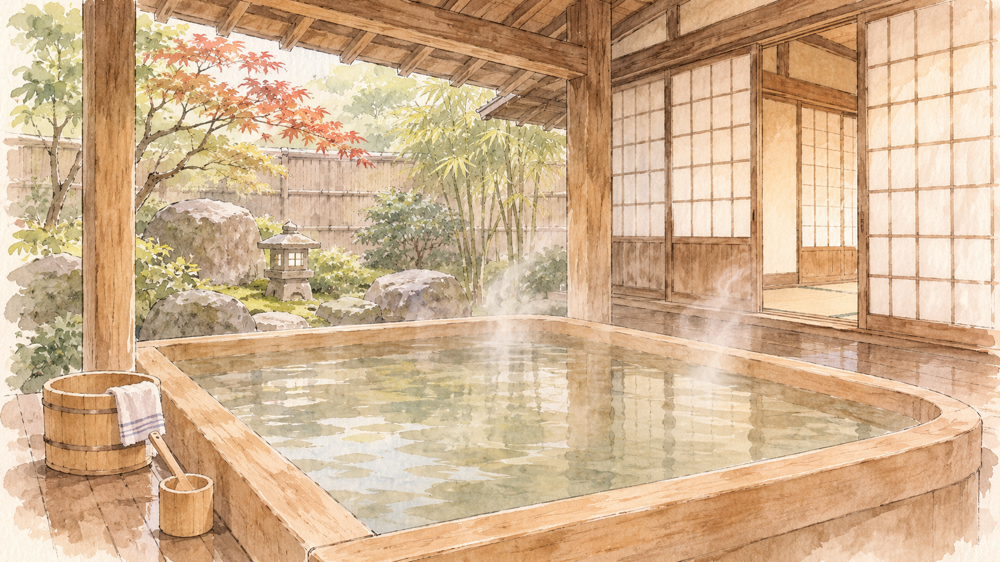

日本の暮らしと入浴文化
日本入浴史

人々は、昔どのように身体を洗い、湯に浸かっていたのでしょうか。
縄文時代から昭和まで、日本の入浴文化の移り変わりをたどります。
ご覧になる前に
このサイトには、歴史上の入浴風景を再現した画像が含まれます。 時代や場面によっては裸体の表現がありますので、ご承知のうえお進みください。
掲載画像には、史料に基づく表現のほか、当時の暮らしをもとに想像・復元した表現も含まれます。
日本の暮らしと入浴文化

人々は、昔どのように身体を洗い、湯に浸かっていたのでしょうか。
縄文時代から昭和まで、日本の入浴文化の移り変わりをたどります。
このサイトには、歴史上の入浴風景を再現した画像が含まれます。 時代や場面によっては裸体の表現がありますので、ご承知のうえお進みください。
掲載画像には、史料に基づく表現のほか、当時の暮らしをもとに想像・復元した表現も含まれます。